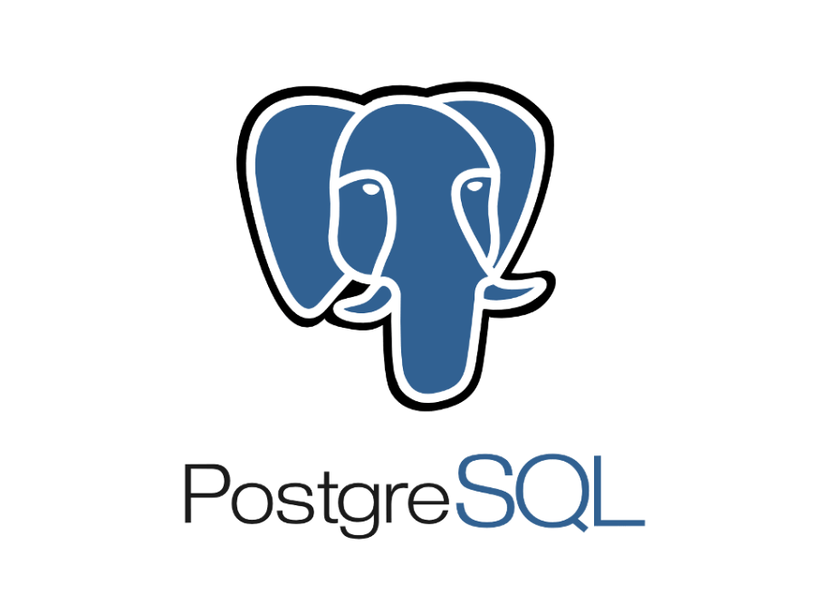
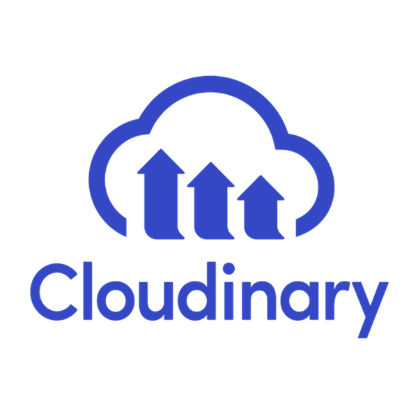

~430
Tablas mapeadas
Una base sin documentar
Reconstruí el modelo de datos del sistema de gestión y lo convertí en una base de conocimiento para trabajar con asistentes de IA.
Construyo las herramientas internas que una empresa usa cada día y conecto los sistemas que las alimentan.
Ver lo que he hechoLevanté un sistema interno para un grupo automotriz con varias sucursales. Reúne en un mismo lugar lo que antes estaba repartido entre sistemas y planillas.
Inicio de sesión con Google o contraseña, accesos por área, control de sesiones y notificaciones en tiempo real.
64 personas registradas y 230 vehículos gestionados en el catálogo de usados.
Filtros por marca, sucursal y condición, exportación a Excel, ofertas y sincronización de fotos con una plataforma externa.
Galería y vista 360°
Usuarios y accesos
Me siento con el área, reviso sus datos y dejo por escrito el proceso real.
Convierto ese proceso en una pantalla simple, con permisos para cada perfil.
Programo las cargas y dejo monitoreo para saber cuándo algo falla.
Animación ilustrativa con datos de ejemplo.
Tablero de órdenes de desabolladura y pintura, con manual de uso propio.
Finanzas mantiene las homologaciones en una pantalla y el panel de Looker se actualiza solo.
Procesos programados que mueven información entre sistemas, desde cada cinco minutos hasta una vez al día.
Reconstruí el modelo de datos del sistema de gestión y lo convertí en una base de conocimiento para trabajar con asistentes de IA.
Un INNER JOIN exigía repuestos y dejaba fuera las órdenes con solo servicios externos. Encontré la causa y corregí el mismo patrón en otros procedimientos.
Un solo proceso envía órdenes, repuestos, stock y ventas, con un perfil por red en lugar de un script por marca.
Diseño, desarrollo y puesta en producción de la plataforma interna, pipelines de datos, API REST y reportería financiera.
Con especializaciones en desarrollo full stack (2024), diseño y gestión de bases de datos (2022) y soporte computacional (2022).
Gestión de clientes en CRM, apoyo técnico, atención al cliente y reportes mensuales.

